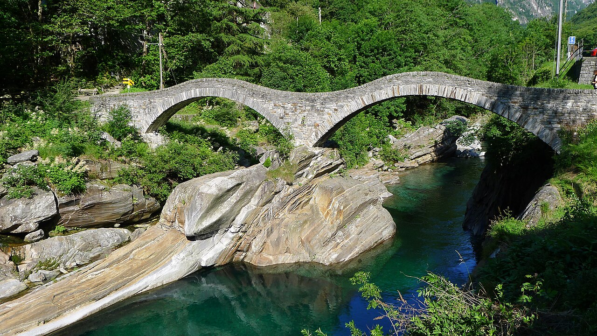
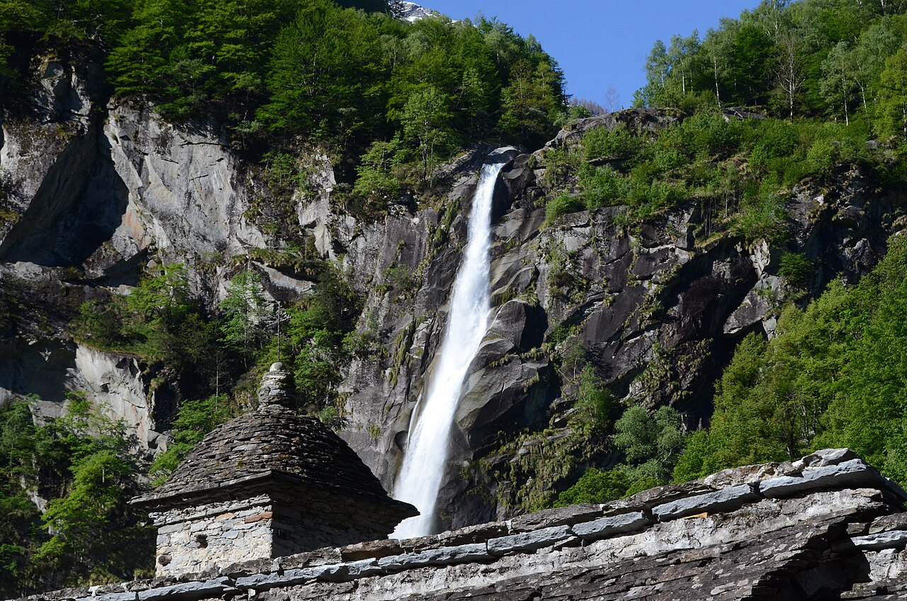
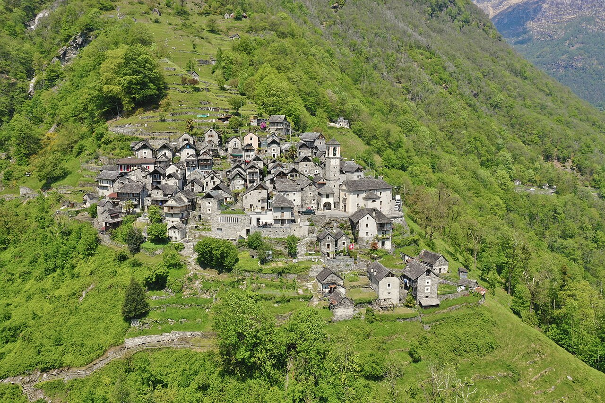
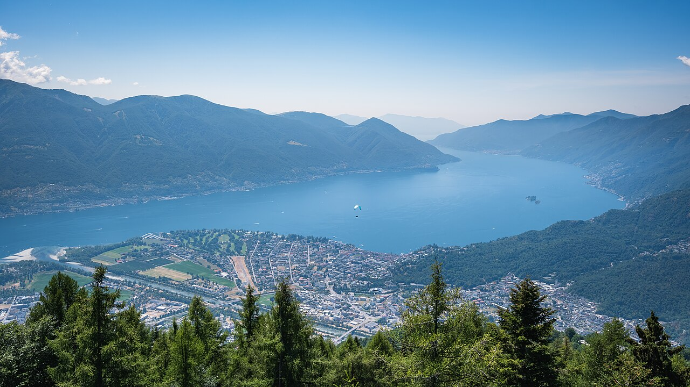
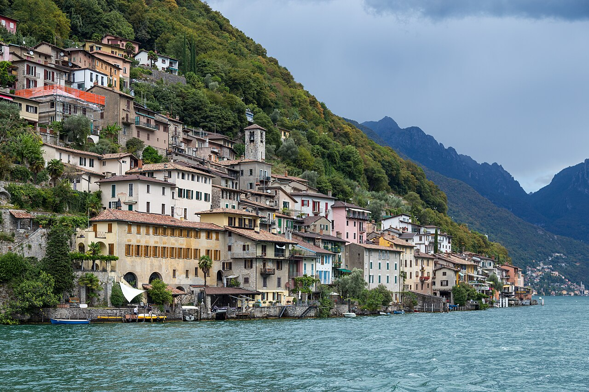
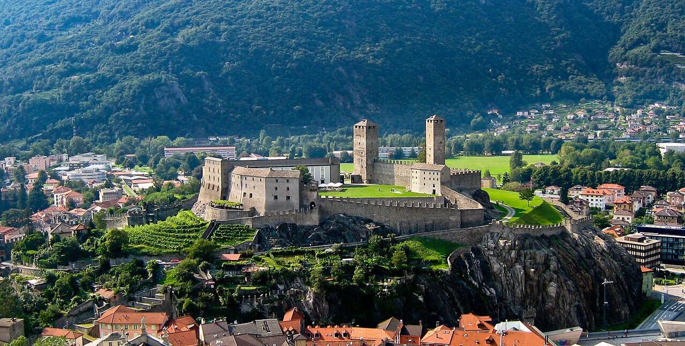

May
GreatWarm (20–25 °C), green and quiet. The best region for May.
in Switzerland, per person≈ €950–1 690
All-in from €1 130 (Langenfeld) · €1 810 (Mexico City)

Switzerland with an Italian soul: jade-green rivers, waterfalls, stone villages and lakeside piazzas, with free public transport for hotel guests.
The best region for May: 20–25 °C, rivers full, before the summer heat. River water is still cold (≈ 12–16 °C).
July–August adds ≈ €110–180 per person in Switzerland (+11 %), mostly for beds, and the flights from Mexico City cost ≈ 30 % more. Passes, food and most lift tickets cost the same all summer.
Warm (20–25 °C), green and quiet. The best region for May.
Warm, long evenings, and the lakes become swimmable.
Swimming season, but hot (30 °C+), humid and busier.
The hottest month. Ferragosto (15 Aug) brings Italian crowds, and Locarno hotels spike during the film festival.
Keep 1–2 days flexible and save the big mountain days for clear weather.
Langenfeld → Basel → Gotthard Base Tunnel → Bellinzona → Tenero/Locarno (≈ 8 h). Aperitivo on Lake Maggiore. Friends from Mexico City: fly into Milan Malpensa (Aeroméxico nonstop from spring 2027), then ≈ 2 h by train to Locarno with one change. Zürich works too (≈ 2 h 45 through the Gotthard).
Bus 321 to Sonogno, hike the riverside Sentierone down to Lavertezzo (≈ 3–4 h) and the Ponte dei Salti double-arch bridge. Stop at the stone village of Corippo.
Bus to Bignasco → Val Bavona: Foroglio's 110 m waterfall and stone hamlets with no mains electricity. Mario Botta's church in Mogno.
Funicular + cable car + chairlift to Cimetta: from Monte Rosa down to the lake. Afternoon in Ascona.
The Centovalli railway to Verdasio, the little cable car up to car-free Rasa and a walk down to Intragna. Or a boat to the Brissago Islands botanical gardens.
UNESCO castles of Bellinzona (Castelgrande), then on to Lugano.
Monte Brè funicular → olive trail to Gandria → boat back. Sunset on Monte San Salvatore.
Cog railway to Monte Generoso (Mario Botta's 'stone flower' summit building) or a day trip to Como / Bellagio in Italy (30 min).
Lugano → Zürich → Köln (≈ 7.5 h). Friends: from Lugano it is ≈ 1 h 30 by direct train to Malpensa.





With 5 people, a holiday apartment with a kitchen is almost always cheapest. Book with free cancellation now and re-check prices later.
Tenero has big lakeside campsites with mobile homes for 5–6 people (and they give the Ticino Ticket).
≈ CHF 40–60 pp/nightMinusio, Gordola or Tenero for Locarno. Paradiso or Castagnola for Lugano. Confirm the Ticino Ticket with your host.
≈ CHF 70–100 pp/nightA hotel spread across the houses of a tiny 1,000-year-old stone village.
≈ CHF 150+ ppLangenfeld → Köln → Basel → Lucerne/Arth-Goldau → Gotthard Base Tunnel → Bellinzona → Locarno (≈ 8 h). Cheapest: DB Sparpreis to Basel + an SBB Saver Day Pass (from CHF 52, or CHF 29 with Half Fare) for the Swiss part each way.
Fly into Milan Malpensa (Aeroméxico nonstop from spring 2027), then ≈ 2 h by train to Locarno with one change. Zürich works too (≈ 2 h 45 through the Gotthard). From Lugano it is ≈ 1 h 30 by direct train to Malpensa.
Free with the Ticino Ticket (from your accommodation). It covers regional trains and buses for your whole stay, with 20–30 % off cable cars and some boats. No Swiss pass needed.
CHF per person in May–June, sharing everything in Switzerland between 5. Only the trip there differs: the train from Langenfeld or the flights from Mexico City. 'Budget' = hostels/campsites and cooking. 'Comfort' = apartments/3★ hotels and more meals out.
| Item | Budget | Comfort |
|---|---|---|
| Local transport (Ticino Ticket = free) | 30 | 60 |
| Lifts & entries | 70 | 150 |
| Accommodation (8 nights) | 400 | 680 |
| Food (grotti are good value) | 340 | 585 |
| Buffer | 50 | 100 |
| In Switzerland, everyone | 890 | 1 575 |
| Getting there and back | ||
| You two: train Langenfeld ⇄ Ticino (DB + Saver Day Passes) | 170 | 250 |
| Friends: flights Mexico City ⇄ MXP + airport train | 800 | 1 200 |
| Total from Langenfeld | 1 060 | 1 825 |
| Total from Mexico City | 1 690 | 2 775 |
€ at 1 CHF ≈ €1.07. 2026 prices; Swiss fares rise ≈ 3–4 % from Dec 2026. Flights are an estimate for economy with one stop, booked 3–6 months ahead. Splurges are listed separately.
Today is late October 2026. See the overview page for the full timeline.